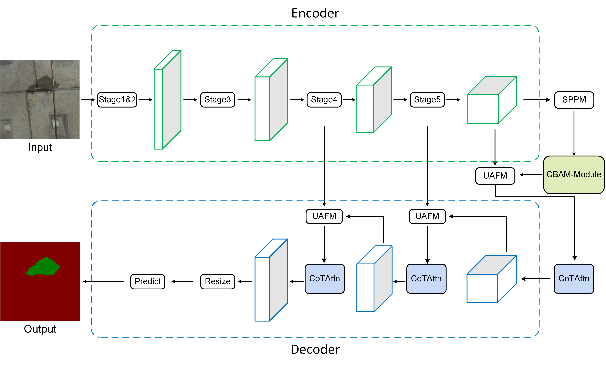

Yonghui Tan (谭永辉) |
Research Interest
I am working in remote sensing change detection and deep learning semantic segmentation. Currently, I focus on the following research topics:
- Change detection with bi-temporal very-high-resolution remote sensing images
- Semantic segmantaion in computer vision
Education
- 2022.09-2025.06 East China University of Technology Surveying and Mapping M.S.
- 2018.09-2022.06 Hunan University of Science and Engineering surveying and mapping engineering B.S.
Publications
Semantic Segmentation:
|  |
Real-Time Tunnel Lining Leakage Image Semantic Segmentation Via Multiple Attention Mechanisms
Y. Tan, X. Li, J. Lai, and J. Ai Measurement Science and Technology, 2024. |
Change Detection:
 |
BD-MSA: Body decouple VHR Remote Sensing Image Change Detection method guided by multi-scale feature information aggregation
Y. Tan, X. Li, Y. Chen and J. Ai IEEE Journal of Selected Topics in Applied Earth Observations and Remote Sensing, 2024. |
Project
- 2023.07 - 2024.06, Special Funds for Postgraduate Innovation in Jiangxi Province in 2023 (YC2023-S556, Chair)
- 2024.07 - 2025.06, East China University of Technology 2024 Graduate Innovation Special Funds Program (Chair)
- 2022 - , National Natural Science Foundation of China Regional Science Fund Program (42261078, participation)
- 2024.04 - , Science and Technology Innovation Program of Ningbo Institute of Surveying, Mapping and Remote Sensing Technology
Academic Activity
- Won the second prize of the excellent paper in the first nuclear industry industry mapping and geographic information technology exchange meeting(2023.03)
- Won the first prize of excellent paper in the second nuclear industry industry mapping and geographic information technology exchange meeting(2024.06)
- Participated in the Second Symposium on Space, Atmosphere, Ocean and Environmental Optics (SAME2024) and gave an oral presentation.(2024.04)
- Participated in the Fifth International Conference on Geology, Mapping and Remote Sensing (ICGMRS 2024) and made an oral presentation.(2024.04)
- Student Member of the Chinese Society of Image Graphics
Reviewer:
- Machine Learning: Science and Technology
- Measurement Science and Technology
- Engineering Research Express
- International Conference on Optoelectronic Information and Computer Engineering (OICE 2024)
Awards
- East China University of Technology 2023 Master's Degree First Class Scholarship (2/25) - 2023.10
- East China University of Technology 2023 Master's Degree Second Class Scholarship
- Third Prize of the 40th Academic Presentation for Master's Students of East China University of Technology - 2023.11
- 2024 (The Tenth) National Student Statistical Modeling Competition Jiangxi Region Second Prize
- Won the Third Prize of East China University of Technology Challenge Cup 2023